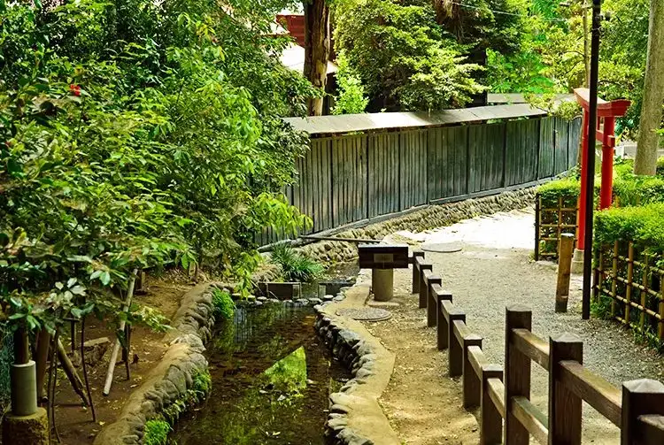

Kokubunji, Tokyo: things to do, food and stays
Kokubunji · Tokyo
Kokubunji
Highlighted on the Tokyo map.

Sights
Dining
Tori Soba Mutahiro 2 gou ten
鶏そば ムタヒロ 2号店

Noodle restaurant in Kokubunji, Tokyo.
KURUMED COFFEE
クルミドコーヒー

Cafe in Kokubunji, Tokyo.
Kurumi Do Kissa Ten
胡桃堂喫茶店

Cafe in Kokubunji, Tokyo.
Men Shokudo Kuniwo
麺食堂くにを

Noodle restaurant in Kokubunji, Tokyo.
Chuka Soba Mutahiro 1 gouten
中華そば ムタヒロ 1号店

Noodle restaurant in Kokubunji, Tokyo.
Jikaseimen Tsukemen Momiji
自家製麺つけ麺 紅葉

Noodle restaurant in Kokubunji, Tokyo.
FUMIDO
中華そば ふうみどう

Noodle restaurant in Kokubunji, Tokyo.
Menson RAGE RAMEN WANTO
麺尊RAGE RAMEN WANTO

Noodle restaurant in Kokubunji, Tokyo.
Curry House Supun
カレーハウス すぷ～ん

Japanese restaurant in Kokubunji, Tokyo.
Vanitoy Bagel Kokubunji ten
バニトイ ベーグル 国分寺店

Cafe in Kokubunji, Tokyo.
Shishikari
シシカリ

Japanese restaurant in Kokubunji, Tokyo.
Musashi Kokubunji Ushio
武蔵国分寺 潮

Noodle restaurant in Kokubunji, Tokyo.
Miso Chuka Soba Mutahiro
味噌中華そば ムタヒロ

Noodle restaurant in Kokubunji, Tokyo.
Ramen Budoka Kunigamae
らーめん武道家 口

Noodle restaurant in Kokubunji, Tokyo.
Shirakawa Chuka Soba Magoichi
白河中華そば 孫市

Noodle restaurant in Kokubunji, Tokyo.
Mutahiro Shokudo
むたひろ食堂

Noodle restaurant in Kokubunji, Tokyo.
Café Slow Reservation
カフェスロー

Cafe in Kokubunji, Tokyo.
Buta NOVA
豚NOVA

Noodle restaurant in Kokubunji, Tokyo.
AMAN KITCHEN

Chinese or Asian restaurant in Kokubunji, Tokyo.
Cocktail Do Kokubunji ten
コクテル堂 国分寺店

Cafe in Kokubunji, Tokyo.
Otome
オトメ

Chinese or Asian restaurant in Kokubunji, Tokyo.
Tonkatsu no Bu
とんかつの部

Meat restaurant in Kokubunji, Tokyo.
Umedzu
うめづ

Restaurant in Kokubunji, Tokyo.
Teuchi Soba Kikutani Kokubunji Reservation
手打そば 菊谷 国分寺

Noodle restaurant in Kokubunji, Tokyo.
Cafe Okimoto
カフェ おきもと

Cafe in Kokubunji, Tokyo.
BACKEN

Cafe in Kokubunji, Tokyo.
Unagi Hirayama Reservation
うなぎ ひらやま

Seafood restaurant in Kokubunji, Tokyo.
cafe icons

Cafe in Kokubunji, Tokyo.
Fuji Lunch
フジランチ

Meat restaurant in Kokubunji, Tokyo.
Farm to Table De Salita Reservation
ファーム トゥー テーブル デ サリータ

Cafe in Kokubunji, Tokyo.
Monkey Punch Reservation
猿乃拳

Seafood restaurant in Kokubunji, Tokyo.
Honyara Do Kokubunji ten
ほんやら洞 国分寺店

Cafe in Kokubunji, Tokyo.
Tonki Kokubunji ten
とんき 国分寺店

Meat restaurant in Kokubunji, Tokyo.
Takoya
多古屋

Izakaya or bar in Kokubunji, Tokyo.
Tantan
淡淡

Noodle restaurant in Kokubunji, Tokyo.
GIAPPOLI botanica Reservation
ジャポリ ボタニカ

European restaurant in Kokubunji, Tokyo.
Stay
JR-East Hotel Mets Kokubunji
JR東日本ホテルメッツ 国分寺

JR-East Hotel Mets Kokubunji is a hotel in Kokubunji, Tokyo.